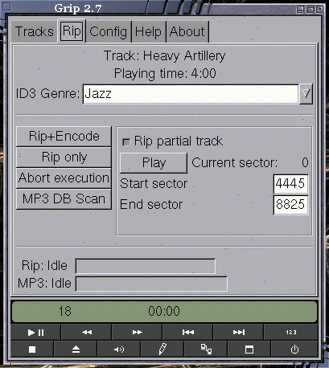
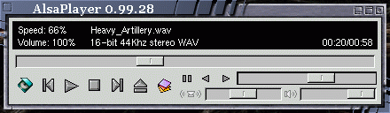
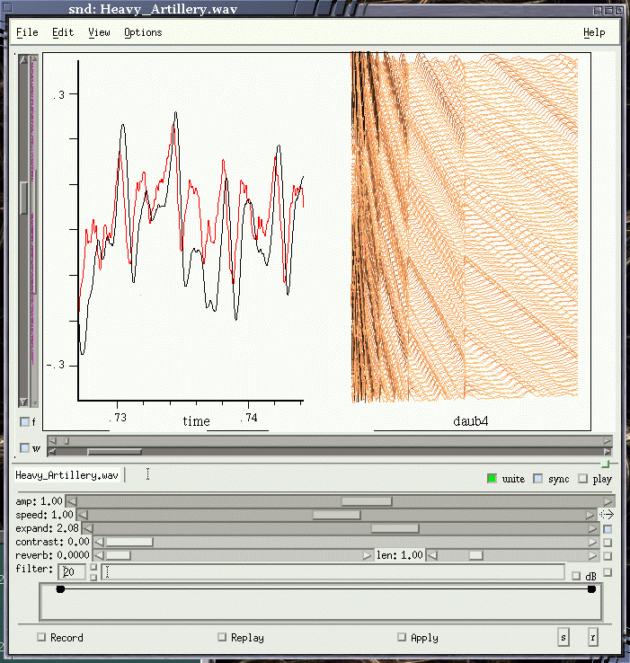
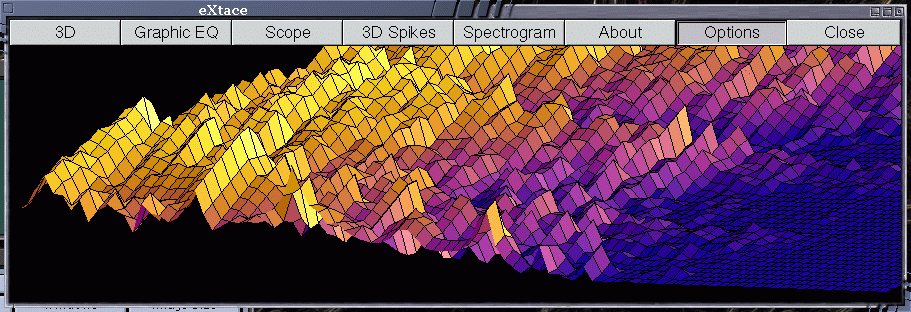
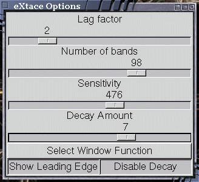

![[ TABLE OF CONTENTS ]](../gx/indexnew.gif)
![[ FRONT PAGE ]](../gx/homenew.gif)

![[ Linux Gazette FAQ ]](./../gx/dennis/faq.gif)

Lately I've been investigating some of the numerous sound processing and display tools available for Linux. This is an extremely active area of Linux software development and covering it fully would be a book-length project; in this series of articles I'll limit myself to software packages which I've found to be particularly useful and impressive.
Soundcard support for Linux is in something of a fragmented state these days. The drivers supplied with the Linux kernel source (the OSS drivers) are functional and work well with many sound cards; they are being maintained, but the original developers have gone on to form a company, 4Front Technologies, which supplies enhanced drivers (including drivers for cards which Linux doesn't support) to Linux users willing to pay for them. 4Front's drivers can be easier to set up than the native Linux drivers, and 4Front's developers attempt to keep abreast of new cards as they appear.
Devotees of open-source software prefer open-source drivers; frustrated by the lack of progress in free Linux sound-card support, the ALSA (Advanced Linux Sound Architecture) project appeared on the scene. Rather than attempting to extend the current free Linux drivers, ALSA programmers started from scratch. Other developers began to contribute and the result has been a new modular driver system which has been useful for end-users for the past year or so. Several sound-card manufacturers have provided specifications to the ALSA programmers, enabling them to provide driver modules for previously unsupported cards.
You aren't restricted to ALSA-aware software if you use the ALSA drivers; OSS-emulation modules are provided so that older and strictly-OSS applications can be run.
A third sound development effort began as an offshoot of the Enlightenment window manager project. The Enlightenment Sound Daemon is intended to allow multiple digitized streams of audio to be played back by a single device. This is the daemon which provides the "system sounds" for Enlightenment. ESD can also play, record, and monitor sounds on remote machines. This project doesn't provide drivers for specific cards; its purpose is to act as an intermediary between the sound hardware and applications. ESD cooperates well with all three of the above driver families.
This multiplicity of sound software might at first glance seem to be a confusing morass, but luckily most recent client software has been designed to make use of any or all of the various interfaces, either via compilation switches or command-line options.
There are several command-line software packages which are both useful in their own right as well as providing services to GUI sound software. In some cases a GUI utility is an easier to use front-end for one or more of these console tools, often a welcome convenience when a tool has dozens of possible command options. Rather than supplying URLs for these packages, I refer you to Dave Phillips' comprehensive and up-to-date Sound and MIDI Software For Linux web-site, which offers links to a profusion of sound software for Linux, as well as commentary.
SoX has been around for several years now; originally created by Lance Norskog, it is now actively maintained by Chris Bagwell. SoX is both a file-converter and an effects utility. It can convert just about any sound-file format to any other, as well as optionally processing the sound in many different ways. Effects include various filters as well as several "guitar effects" such as phaser, chorus, flanging, echos, and reverb. SoX also serves as a sound-file player. As Chris Bagwell writes in the distribution README file,
SoX is really only usable day-to-day if you hide the wacky options with one-line shell scripts.One such shell script, called play, is part of the SoX package; it supplies the options to the sox binary which enable it to be a sound-file playing utility. You may have already used it without knowing it was there, as many file managers call sox whenever a sound-file is double-clicked with a mouse.
Though there are many flashy X Windows mp3 players out there, the humble command-line decoder/player mpg123 is still one of the fastest and most memory-efficient. Several of the GUI players call mpg123 to do the actual grunt work, while XMMS (formerly known as x11amp) now incorporates some of the mpg123 code internally rather than calling it as an external process. Like SoX, mpg123 has many command-line options. With these you can play an MP3 file in a great variety of ways, such as in mono, or at varying speeds. Mpg123 can also retrieve and play files directly from a web-site.
Though Gramofile does have an ncurses-based text interface, it's pretty spare, so I'll include it here. Gramofile was originally developed at the Delft University of Technology by Anne Bezemer and Ton Le as a means of capturing audio tracks from vinyl LPs and writing them to WAV files. Subsequently track-splitting and noise reduction were added, though both of these require some tinkering with settings to get good results. Gramofile is particularly useful to people (myself included) who have collections of old LPs and would like to burn tracks to CDs. This can be time-consuming; after the audio stream has been written it takes another block of time to split off individual tracks and run them through the pop-and-click-removal process. Through experimentation I discovered that Gramofile doesn't know or care if another Gramofile session is running on another console or xterm. While one copy of the program is busily sipping at the audio stream and depositing WAV files in its wake, another process can be splitting and filtering the files from the last run.
I've had good results from simply patching my stereo amplifier's alternate speaker leads to the sound-card input jack. It takes some fiddling to get the amplifier's volume adjusted just right so that clipping and distortion don't occur. I generally keep a software mixer handy while setting up a session. While recording, Gramofile displays a simple level-meter which indicates whether the signal is too strong.
Gramofile isn't limited to vinyl LPs; I've also transferred tracks from cassette tapes with good results.
During the past year or so CD-RW drive prices have plummeted. It's now possible to find even SCSI drives which cost less than two hundred dollars, and IDE drives at not much over one hundred. A couple of months ago my old 12x CDROM drive died and I saw this as a perfect excuse to replace it with a CD read-write drive. My search for Linux software to enable me to use the drive didn't take long -- the consensus on the net seems to be that Joerg Schilling's cdrecord package is robust and well-supported. Though numerous front-end packages have been written as wrappers for cdrecord, so far I've been using it directly. Eventually I'll probably switch over to using XCDroast or one of the others, but as a beginner I find cdrecord's verbose status messages (which are displayed on the terminal as the program burns a CDROM) reassuring. These messages are enabled with the -v option switch.
Schilling's program is exceedingly versatile. Multi-session CDs (especially useful for data backup discs) are easily enabled, as well as blanking rewritable discs. Just about all recent drives are supported by the program.
As a semi-proficient amateur guitar and fiddle player, I often find myself wondering just how particular licks and passages of recorded music are played. The players I listen to often play so quickly that distinguishing individual notes and their sequences can be nearly impossible for the unaided ear. Musicians have approached this problem in several ways. Back when vinyl LPs and multi-speed turntables were the norm, some would play 33-1/3 RPM discs at half speed. More recently specialized cassette tape machines have become available which are able to slow down the music without altering the pitch; this would be a boon to the aspiring musician if the machines weren't so expensive. It seemed to me that this was something my Linux machine ought to be able to do, so I began searching for software.
Whether the audio source is CDROM, tape, or LP, the first step is to create
a file on disk which can be manipulated with software. Though historically on
unix-ish systems the Sun *.au was the native sound-file format, these
days it's more common for Linux software to be designed to work with the
Microsoft WAV format. The two formats are nearly identical; both are mainly
made up of PCM audio data with the WAVE files carrying
extra header information. WAV files are huge, occupying about twelve
megabytes per minute of playing time. There are several utilities which can
write WAV files from either an audio stream or directly from an audio CD.
cdda2wav, a console program which is bundled with Joerg Schilling's
excellent cdrecord package, works well with most CDROM drives. Not
only can it rip tracks or entire discs and convert them to WAV files, it can
also play the files through a soundcard at any speed without writing the file
to disk. Supplied along with cdda2wav is a script (originally by Raul Sobon
and modified by Joerg Schilling) called pitchplay which simply calls
cdda2wav with options which cause it to not write out a file and play a CD
track at a specified percentage of normal pitch. As an example,
pitchplay 6 50 will play track six of a CD one octave lower than
normal.
Another track-ripping package, cdparanoia, is intended for use with CDROM drives which read tracks erratically. Cdparanoia doesn't have as many options as cdda2wav, but with certain drives its error-correction is needed to produce WAV files which accurately reproduce the contents of an audio track.
These command-line utilities don't have to be used in their bare form, as numerous GUI front-ends have been developed. One of the best I've encountered is Mike Oliphant's Grip program, an exceedingly stable and handy GTK-based front-end for not only the track-rippers but also mp3-encoders. Grip is not tied to any particular rippers and encoders. Any can be used; one of Grip's configuration screens allows the user to specify client programs as well as preferred command switches. Grip doubles as a CDDB-aware CD player, which makes it particularly well-suited for the musician. In the screenshot below notice the "Rip partial track" check-box. This allows you to rip just one segment of a track, perhaps a particular solo for study.

What to do with these bulky WAV files now? Andy Lo A Foe has written a sound-file player called Alsaplayer which has several unique features. This player is designed to work with the ALSA drivers, the native Linux OSS drivers, and ESD. It can play WAV, MP3 and MikMod-supported module files as well as CD audio ripped digitally direct from disc. A variety of visualization scopes are implemented as plug-ins, including several FFT variants and a reworked version of Paul Harrison's Synaesthesia program. I was particularly impressed by the variable speed and direction controls, which work amazingly well. In the screenshot below you will see a slider control; it's the central one with the two triangular arrow buttons to the left of it:

As a sound file plays this slider lets you dynamically alter the speed and even cause the sound to instantly begin playing backwards (handy for finding those hidden secret messages!). I kept expecting the program to crash as I abused this control but it seems steady as a rock. This speed control works equally well with MP3 files. Now if I could just figure out a way to control it with my feet so I wouldn't have to put the instrument down!
Not every WAV editor can deal with very large files. One program which can, and which can also play them at reduced speed without altering the pitch, is Bill Schottstaedt's snd program. Snd is a self-effacing program which doesn't look like much the first time it is run. Sort of like booting Linux for the first time and seeing a bash command prompt on a black screen. Snd, though, has layer upon layer of complexity which becomes apparent after reading the thorough and well-written HTML manual. Luckily the program's basic editing functions aren't too difficult to learn. Many of the keyboard commands are patterned after those of Emacs and are also available from the menu-bar. The feature which will be of the most interest to musicians is the ability to "expand" a sound-file. This is accessible when Show Controls is selected from the View menu. In the screenshot below the controls consist of the series of horizontal sliding control-bars beneath the main window:

As with Alsaplayer, the speed of playback can be controlled with the second bar, while the two small arrows to the right of the speed bar control the direction of play. But to a musician the third bar (Expand) is the most useful. From the manual:
'Expand' refers to a kind of granular synthesis used to change the tempo of events in the sound without changing pitch. Successive short slices of the file are overlapped with the difference in size between the input and output hops (between successive slices) giving the change in tempo.
This expansion works surprisingly well, though such processing does tend to highlight any noise or flaws in the original recording. For a musician just wanting to hear which notes inhabit a complex musical passage this is a wonderful feature. The mp3 player mpg123 can play mp3 files in a similar way. Using (as an example) the command mpg123 -h 2 [filename] will play each frame of the mp3 file twice, resulting in half-speed-same-pitch output. The output tends to be more distorted than that of snd expanding a WAV file, but this likely is a limitation of the lossy mp3 format.
Snd is chock-full of capabilities which I haven't had time to explore yet. It's scriptable using the Guile scheme dialect. The recording window, featuring a set of simulated VU meters, can be used to record audio from multiple soundcards, microphones or any other source with the output written to a sound file. I find some new feature or capability each time I run the program. All this with a good manual!
I couldn't wrap up this article without at least a mention of an impressive piece of "eye-candy", a program for sound visualization called eXtace. This is an addictive piece of software which was originally written by Carsten Haitzler (of Enlightenment window-manager fame) and Michael Fulbright, from Redhat. Its new maintainer, Dave J. Andruczyk, has recently given the program a new lease on life and it's well worth trying out.
eXtace relies upon ESD (the Enlightened Sound Demon) for its sound input and won't work without it. ESD is a small download and it's probably packaged on your distribution CD if you aren't running it already. ESD can be started with the command esd -port 5001 & ; once it's running eXtace can be started up. Another requirement is the FFTW libraries (Fastest Fourier Transform In The West). Though this issue will probably be resolved by the time you read this, version 1.2.9 didn't seem to be able to find the libfftw libraries during configuration and thus the display of the 3D landscape and spike modes is minimal. Version 1.2.8 works well for me, and I recommend it. The source for all versions can be obtained from this site.
Here is a screenshot of eXtace displaying a moment's worth of Thelonious Monk's Sweet and Lovely, in 3D landscape mode:

As with many such audio visualization tools, quieter music with few instruments seems to provide a more comprehensible display. A piece such as the slow introduction to Jimi Hendrix's blues Red House (from the Live At Winterland CD) is a good one to try.
eXtace has several controls enabling you to tailor the display to your machine's capabilities and your own taste. Here is the Options window:

The lag factor setting needs to be adjusted for each combination of sound-card and ESD version; it only needs to be tinkered with once, as these settings are saved between sessions.
You will notice a small black window hovering above eXtace's main window. This one is great fun; by manipulating the white line by changing its direction and length with the mouse... just try it. It's sort of like riding a roller coaster.